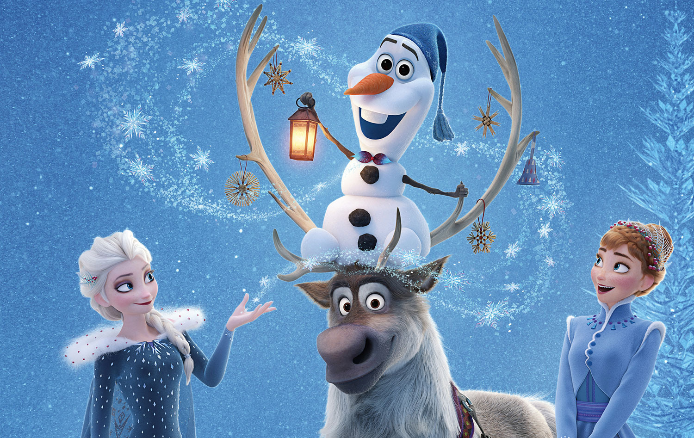

About Olaf
Olaf is a snowman created by Elsa and Anna in their childhood
Olaf and his friends
Olaf's Characteristics
- Sprung from Elsa's magical powers, Olaf is by far the friendliest snowman to walk the mountains above Arendelle
- His innocence, outgoing personality and uncanny ability to disassemble himself at good and not-so-good times lead to some awkward, albeit laughable moments
- He is innocent, outgoing and loves all things summer
- Olaf may be a bit naive, but his sincerity and good-natured temperament make him a true friend to Anna and Elsa.
- He LOVES warm hugs!
Olaf's Friends
Olaf has some awesome friends. I think his best friends od Sven. He is the best reindeer! Click on the links below to read more about them: